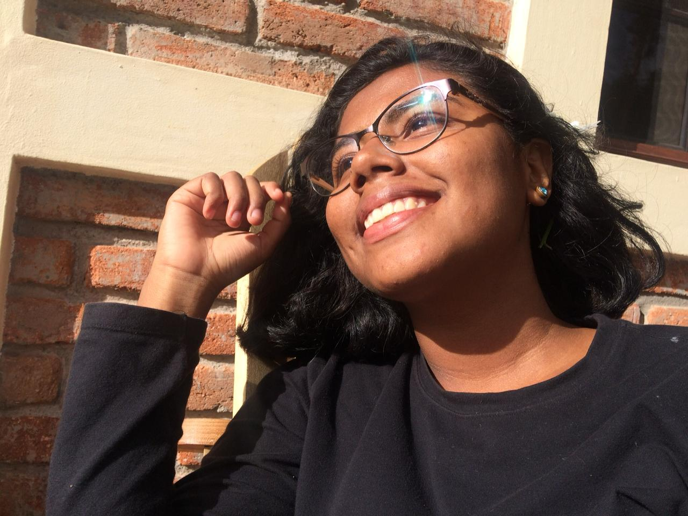
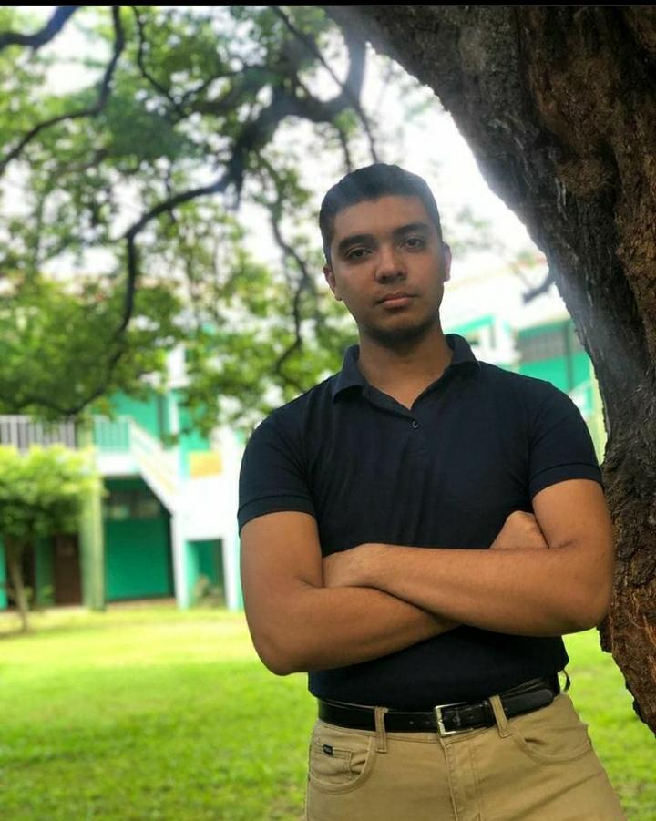

-
Manager
Hola, soy Cristian Valle Martínez, tengo 38 años, estoy estudiando Fisioterapia, me gusta el trabajo que hago por que cada arreglo que hacemos es un reto, es algo nuevo por hacer y tener las satisfacción que si pude, que logre hacerlo por muy difícil que estuviera es especial.
Ver la emoción en los rostros de los festejados y escucharlos decir que les encanta todo lo que hice es fascinante, mi sueño es poder tener algo más grande y cubrir más eventos y hacer feliz a mucha gente con mi trabajo.

-
coordinador
Holis, Soy Ally Valle, tengo 20 años, Actualmente en 4to año de ingeniería en computación, desde muy pequeña mi madre me enseño a dibujar y a hacer manualidades como hobby, con el tiempo fue formando parte de mi
Al cabo de un tiempo me impresionaba lo que podía hacer con mis propias manos, supe que era magnifico cuando todos podian tener en sus manos mi obra maestra
Hoy en dia veo la reacción de las personas cuando les entrego mi trabajo y su felicidad es notoria, verlos sonreír y sus caras de asombro es genial!, creo que podremos hacer feliz a muchas personas llevándoles un poco de nuestra creatividad a sus vidas.
 -
Diseñador
Hola, yo soy Ervin Hernandez, Tengo 20 años Estoy cursando el 2 año de la carrera de Comunicación para el Desarrollo, en la UNAN-Managua Desde pequeño siempre me gustaron las manualidades, el dibujo, y al pasar de los años lo hago mejor y forma parte de mi vida.
Lo que me motiva a seguir con esta práctica es ver la reacción de las personas al ver mi trabajo, los detalles desde el más notable hasta el más sutil, donde busco replicar con exactitud lo que tengo en mente y lo que quiero; y de esta manera sea algo que la gente pueda apreciar u obtener, servir de ejemplo que no es necesario que te enseñen a hacerlo porque cuando las ganas, el anhelo y la práctica se unen tu propia mente te da el diseño e ingeniería para hacer lo que desees, no todo sale al primer intento, pero los grandes inventos se han conseguido luego de un par de errores.
